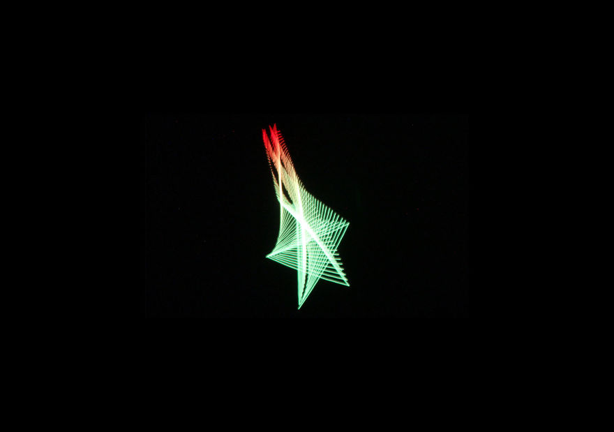
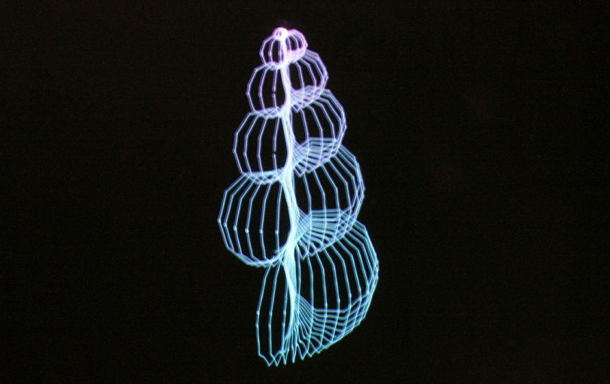
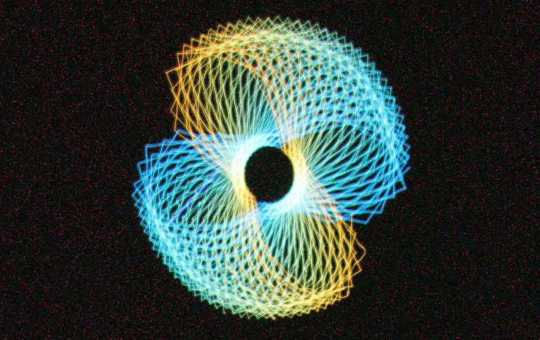
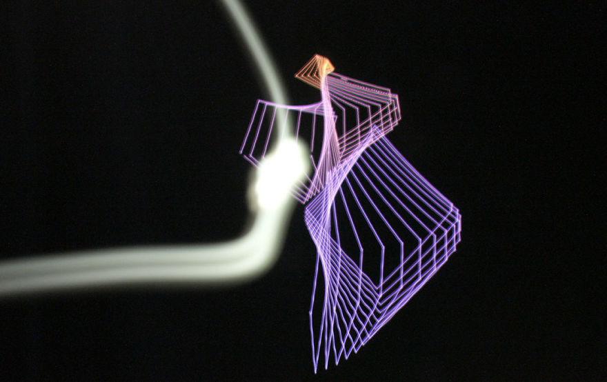
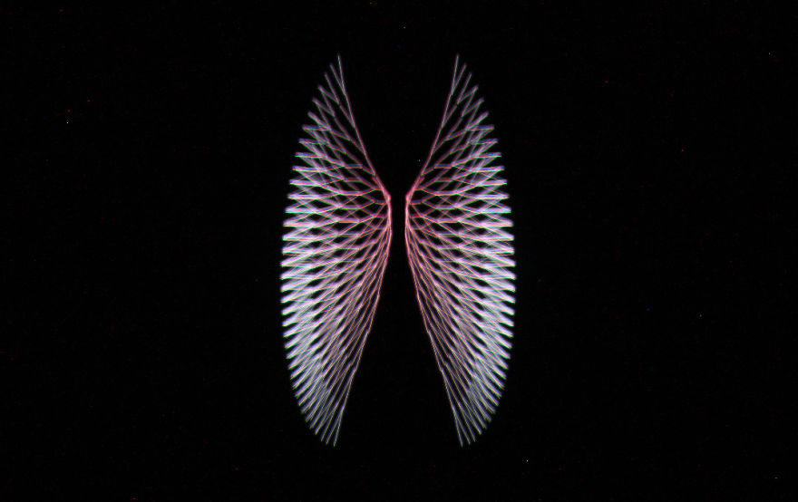
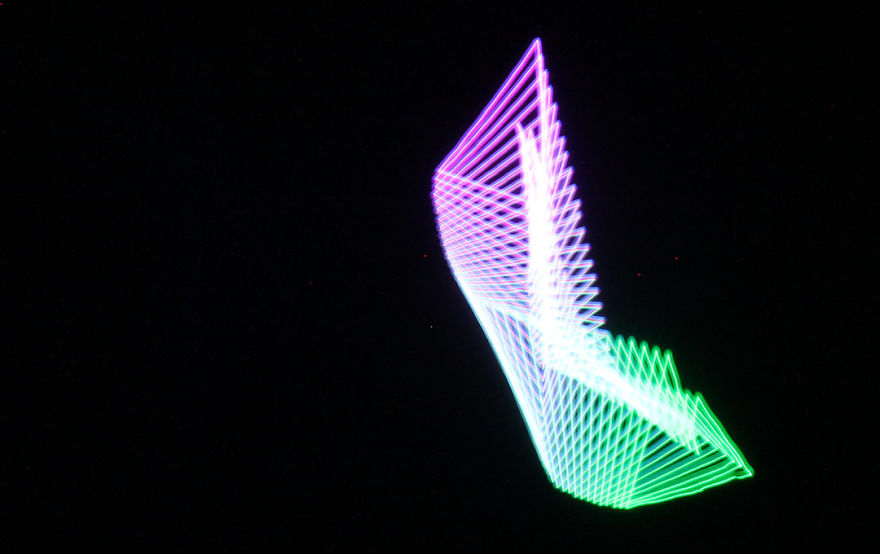
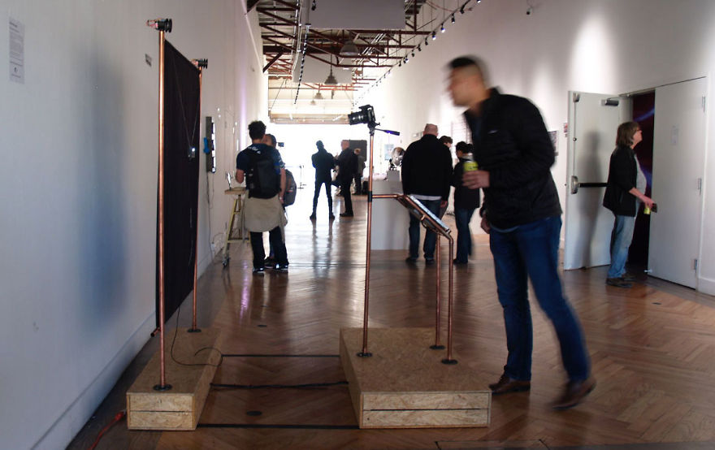
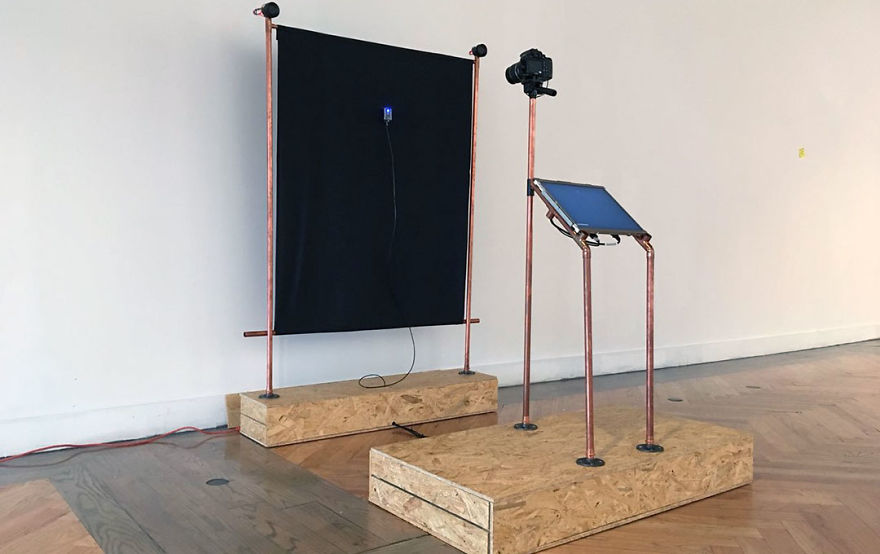
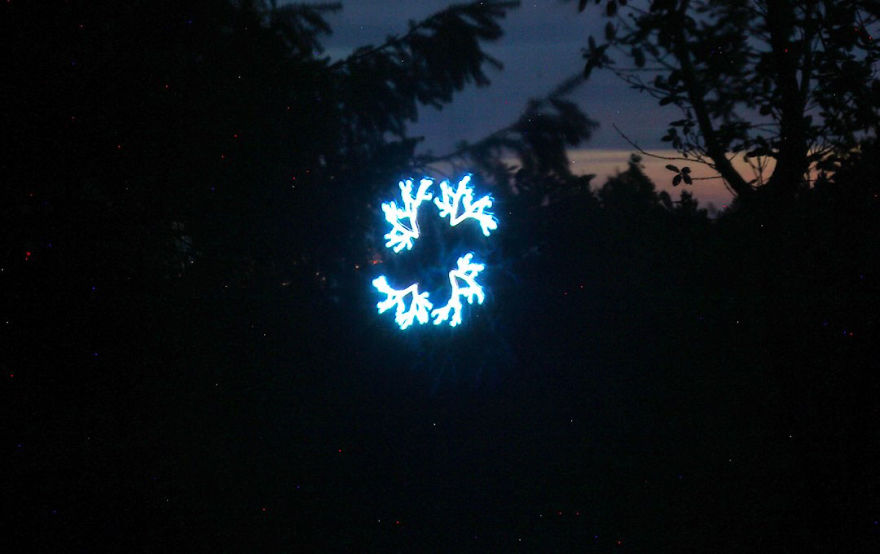
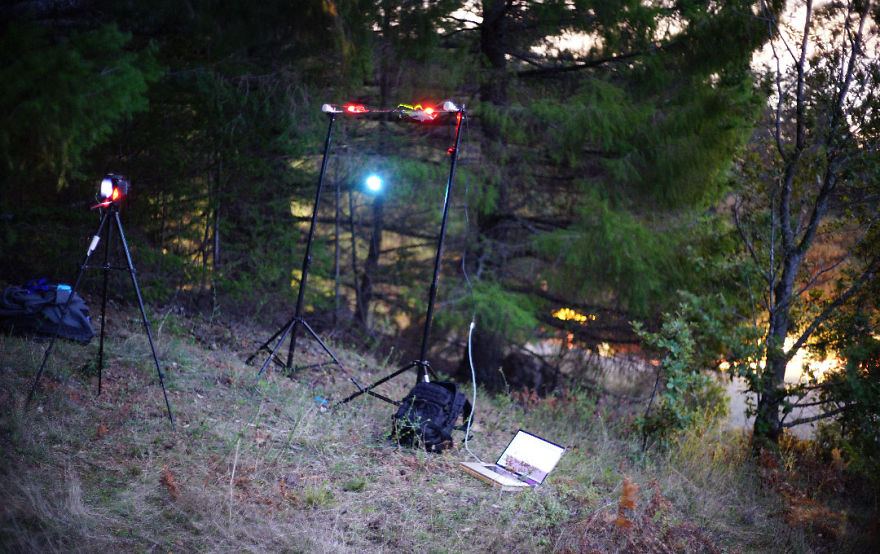

I have always been fascinated by the presence of geometry in nature and astonished by how strictly nature adheres to its rules. Take, for instance, the shell of a mollusk. It appears so perfect to our eyes, and indeed its proportions are intuitively pleasing to us. These proportions are generated by following geometric rules from start to finish. Inspired by these patterns, I wanted to elevate them in the digital world, a world where most things succumb to passing trends, quickly become disposable, and are soon forgotten. That's why I created an installation called Non-Viral Series, where visitors are required to exercise patience and fascination as they await the generation of the artifact. Upon entering the Non-Viral Series exhibition, visitors find themselves in a gloomy or dark space, purposely designed to enable the photographic experience. Before them stands an installation consisting of a camera mounted on a stand, facing a vertical plotter (a.k.a. robot). The robot's head is equipped with an RGB LED and gracefully moves through space, leaving behind a trace of that delineates a natural pattern. The camera's shutter opens when the robot begins drawing and closes once it completes its task. The robot's movements are performative, and visitors are encouraged to engage with the evolving pattern before their eyes. However, the final picture remains a mystery until the very end. The duration required to complete each pattern can vary anywhere between 5 minutes and an hour. In this immersive installation, I aim to create an atmosphere where visitors can appreciate the beauty of nature's geometry and the art of anticipation. By slowing down the process and withholding the final reveal, I hope to evoke a sense of wonder and awe, reminding us to cherish the timeless patterns found in the natural world amidst the fast-paced and transient nature of the digital realm.
The culmination of this artistic endeavor is a captivating series of long-exposure photographs, each possessing a unique blend of digital and analog qualities. These photographs capture a distinct aesthetic that embraces the imperfections inherent in the analog movement of the robot, as well as the influence of external elements. However, at their core, they reflect the inherent perfection found within the geometrical patterns of nature.

The inspiration for these patterns stems from the beauty of everyday animals and plants, such as birds, flowers, and sea algae. Through the utilization of the creative coding platform Processing, these patterns are meticulously crafted programmatically. The installation incorporates various technological components, including Arduino Boards for the robot, the Tramontana ecosystem for seamless communication between the camera and the robot, openFrameworks to display the progress and manage the camera using the canon SDK and the ofxCanonEOS plugin. The versatility of the installation allows for its transportation and installation in outdoor settings, seamlessly integrating it into its natural environment. Non-Viral Series made its debut in collaboration with Zaza Zuilhof at CODAME event in San Francisco in June 2018. Non-Viral Series is a testament to the marriage of art, nature, and technology. Through the interplay of long exposure photography, digital craftsmanship, and the exploration of geometrical patterns, this installation invites viewers to appreciate the awe-inspiring beauty of nature convergence with patience and hopefully helps reflect upon different uses of technology, divorced from convenience and efficiency.







